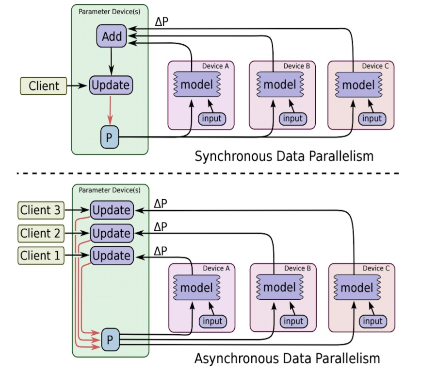

4.8 分布式训练¶
学习目标¶
- 目标
- 掌握TensorFlow的分布式训练接口使用
- 应用
- 无
当我们拥有大量计算资源时，通过使用合适的分布式策略，我们可以充分利用这些计算资源，从而大幅压缩模型训练的时间。针对不同的使用场景，TensorFlow 在 tf.distribute.Strategy`中为我们提供了若干种分布式策略，使得我们能够更高效地训练模型。
4.8.1 TensorFlow 分布式的分类¶
- 图间并行（又称数据并行）
-
每个机器上都会有一个完整的模型，将数据分散到各个机器，分别计算梯度。
-
图内并行（又称模型并行）
- 每个机器分别负责整个模型的一部分计算任务。
1、图间并行用的非常多，会包含两种方式进行更新¶
同步：收集到足够数量的梯度，一同更新，下图上方
异步：即同步方式下，更新需求的梯度数量为1，下图下方

注：PS(parameter server):维护全局共享的模型参数的服务器
2、实现方式¶
- 单机多卡
- 多机单卡
TensorFlow多机多卡实现思路。多级多卡的分布式有很多实现方式，比如：
1. 将每个GPU当做一个worker
2. 同一个机器的各个GPU进行图内并行
3. 同一个机器的各个GPU进行图间并行
比如说第三种：模型实现封装成函数、将数据分成GPU数量的份数、在每个GPU下，进行一次模型forward计算，并使用优化器算出梯度、reduce每个GPU下的梯度，并将梯度传入到分布式中的优化器中
4.8.1 单机多卡训练： MirroredStrategy¶
tf.distribute.MirroredStrategy 是一种简单且高性能的，数据并行的同步式分布式策略，主要支持多个 GPU 在同一台主机上训练。
- 1、MirroredStrategy运行原理：
- 1、训练开始前，该策略在所有 N 个计算设备（GPU）上均各复制一份完整的模型
- 2、每次训练传入一个批次的数据时，将数据分成 N 份，分别传入 N 个计算设备（即数据并行）
-
3、使用分布式计算的 All-reduce 操作，在计算设备间高效交换梯度数据并进行求和，使得最终每个设备都有了所有设备的梯度之和，使用梯度求和的结果更新本地变量
- 当所有设备均更新本地变量后，进行下一轮训练（即该并行策略是同步的）。默认情况下，TensorFlow 中的 MirroredStrategy 策略使用 NVIDIA NCCL 进行 All-reduce 操作。
-
2、构建代码步骤：
1、使用这种策略时，我们只需实例化一个 MirroredStrategy 策略:
strategy = tf.distribute.MirroredStrategy()
2、并将模型构建的代码放入 strategy.scope() 的上下文环境中:
with strategy.scope():
# 模型构建代码
或者可以在参数中指定设备，如:
strategy = tf.distribute.MirroredStrategy(devices=["/gpu:0", "/gpu:1"])即指定只使用第 0、1 号 GPU 参与分布式策略。
4.8.1.1 MirroredStrategy进行分类模型训练¶
以下代码展示了使用 MirroredStrategy 策略，在 TensorFlow Datasets 中的部分图像数据集上使用 Keras 训练 MobileNetV2 的过程：
import tensorflow as tf
import tensorflow_datasets as tfds
num_epochs = 5
batch_size_per_replica = 64
learning_rate = 0.001
strategy = tf.distribute.MirroredStrategy()
print('Number of devices: %d' % strategy.num_replicas_in_sync) # 输出设备数量
batch_size = batch_size_per_replica * strategy.num_replicas_in_sync
# 载入数据集并预处理
def resize(image, label):
image = tf.image.resize(image, [224, 224]) / 255.0
return image, label
# 当as_supervised为True时，返回image和label两个键值
dataset = tfds.load("cats_vs_dogs", split=tfds.Split.TRAIN, as_supervised=True)
dataset = dataset.map(resize).shuffle(1024).batch(batch_size)
with strategy.scope():
model = tf.keras.applications.MobileNetV2()
model.compile(
optimizer=tf.keras.optimizers.Adam(learning_rate=learning_rate),
loss=tf.keras.losses.sparse_categorical_crossentropy,
metrics=[tf.keras.metrics.sparse_categorical_accuracy]
)
model.fit(dataset, epochs=num_epochs)
这个是在线下测试的结果
-
epoch=5,batch_size=64
-
2块 NVIDIA GeForce GTX 1080 Ti 显卡进行单机多卡的模型训练。
| 数据集 | 单机无分布式（Batch Size 为 64） | 单机多卡（总 Batch Size 为 64） | 单机多卡（总 Batch Size 为 256） |
|---|---|---|---|
| cats_vs_dogs | 150s/epoch | 36s/epoch | 30s/epoch |
4.8.2 多机训练： MultiWorkerMirroredStrategy¶
多机训练的方法和单机多卡类似，将 MirroredStrategy 更换为适合多机训练的 MultiWorkerMirroredStrategy 即可。不过，由于涉及到多台计算机之间的通讯，还需要进行一些额外的设置。
1、需要设置环境变量 TF_CONFIG ，示例如下:
os.environ['TF_CONFIG'] = json.dumps({
'cluster': {
'worker': ["localhost:8888", "localhost:9999"]
},
'task': {'type': 'worker', 'index': 0}
})
2、TF_CONFIG 由 cluster 和 task 两部分组成：
-
cluster 说明了整个多机集群的结构和每台机器的网络地址（IP + 端口号）。对于每一台机器，cluster 的值都是相同的。
-
task 说明了当前机器的角色。例如， {'type': 'worker', 'index': 0} 说明当前机器是 cluster 中的第 0 个 worker（即 localhost:20000 ）。每一台机器的 task 值都需要针对当前主机进行分别的设置。
3、运行过程
-
1、在所有的机器上逐个运行训练代码即可。先运行的代码在尚未与其他主机连接时会进入监听状态，待整个集群的连接建立完毕后，所有的机器即会同时开始训练。
-
2、假设有两台机器，即首先在两台机器上均部署这个程序，唯一的区别是 task 部分，第一台机器设置为 {'type': 'worker', 'index': 0} ，第二台机器设置为 {'type': 'worker', 'index': 1} 。接下来，在两台机器上依次运行程序，待通讯成功后，即会自动开始训练流程。
多机训练代码¶
同样对于同一个数据及进行训练的时候，指定多机代码：
import tensorflow_datasets as tfds
import os
import json
num_epochs = 5
batch_size_per_replica = 64
learning_rate = 0.001
num_workers = 2
# 1、指定集群环境
os.environ['TF_CONFIG'] = json.dumps({
'cluster': {
'worker': ["localhost:20000", "localhost:20001"]
},
'task': {'type': 'worker', 'index': 0}
})
batch_size = batch_size_per_replica * num_workers
def resize(image, label):
image = tf.image.resize(image, [224, 224]) / 255.0
return image, label
dataset = tfds.load("cats_vs_dogs", split=tfds.Split.TRAIN, as_supervised=True)
dataset = dataset.map(resize).shuffle(1024).batch(batch_size)
# 2、初始化集群
strategy = tf.distribute.experimental.MultiWorkerMirroredStrategy()
# 3、上下文环境定义模型
with strategy.scope():
model = tf.keras.applications.MobileNetV2()
model.compile(
optimizer=tf.keras.optimizers.Adam(learning_rate=learning_rate),
loss=tf.keras.losses.sparse_categorical_crossentropy,
metrics=[tf.keras.metrics.sparse_categorical_accuracy]
)
model.fit(dataset, epochs=num_epochs)
| 数据集 | 单机单卡（Batch Size 为 64） | 双机单卡（总 Batch Size 为 64） | 双机单卡（总 Batch Size 为 128） |
|---|---|---|---|
| cats_vs_dogs | 1622s | 858s | 755s |
4.8.3 总结¶
- TensorFlow的分布式训练接口使用